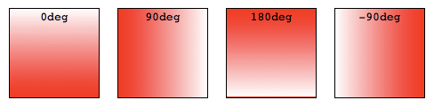

Using CSS gradients
CSS gradients are represented by the <gradient> data type, a special type of <image> made of a progressive transition between two or more colors. You can choose between three types of gradients: linear (created with the linear-gradient() function), radial (created with the radial-gradient() function), and conic (created with the conic-gradient() function). You can also create repeating gradients with the repeating-linear-gradient(), repeating-radial-gradient(), and repeating-conic-gradient() functions.
Gradients can be used anywhere you would use an <image>, such as in backgrounds. Because gradients are dynamically generated, they can negate the need for the raster image files that traditionally were used to achieve similar effects. In addition, because gradients are generated by the browser, they look better than raster images when zoomed in, and can be resized on the fly.
We'll start by introducing linear gradients, then introduce features that are supported in all gradient types using linear gradients as the example, then move on to radial, conic and repeating gradients
Using linear gradients
A linear gradient creates a band of colors that progress in a straight line.
A basic linear gradient
To create the most basic type of gradient, all you need is to specify two colors. These are called color stops. You must have at least two, but you can have as many as you want.
.simple-linear {
background: linear-gradient(blue, pink);
}
Changing the direction
By default, linear gradients run from top to bottom. You can change their rotation by specifying a direction.
.horizontal-gradient {
background: linear-gradient(to right, blue, pink);
}
Diagonal gradients
You can even make the gradient run diagonally, from corner to corner.
.diagonal-gradient {
background: linear-gradient(to bottom right, blue, pink);
}
Using angles
If you want more control over its direction, you can give the gradient a specific angle.
.angled-gradient {
background: linear-gradient(70deg, blue, pink);
}
When using an angle, 0deg creates a vertical gradient running bottom to top, 90deg creates a horizontal gradient running left to right, and so on in a clockwise direction. Negative angles run in the counterclockwise direction.

Declaring colors & creating effects
All CSS gradient types are a range of position-dependent colors. The colors produced by CSS gradients can vary continuously with position, producing smooth color transitions. It is also possible to create bands of solid colors, and hard transitions between two colors. The following are valid for all gradient functions:
Using more than two colors
You don't have to limit yourself to two colors—you may use as many as you like! By default, colors are evenly spaced along the gradient.
.auto-spaced-linear-gradient {
background: linear-gradient(red, yellow, blue, orange);
}
Positioning color stops
You don't have to leave your color stops at their default positions. To fine-tune their locations, you can give each one zero, one, or two percentage or, for radial and linear gradients, absolute length values. If you specify the location as a percentage, 0% represents the starting point, while 100% represents the ending point; however, you can use values outside that range if necessary to get the effect you want. If you leave a location unspecified, the position of that particular color stop will be automatically calculated for you, with the first color stop being at 0% and the last color stop being at 100%, and any other color stops being half way between their adjacent color stops.
.multicolor-linear {
background: linear-gradient(to left, lime 28px, red 77%, cyan);
}
Creating hard lines
To create a hard line between two colors, creating a stripe instead of a gradual transition, adjacent color stops can be set to the same location. In this example, the colors share a color stop at the 50% mark, halfway through the gradient:
.striped {
background: linear-gradient(to bottom left, cyan 50%, palegoldenrod 50%);
}
Gradient hints
By default, the gradient transitions evenly from one color to the next. You can include a color-hint to move the midpoint of the transition value to a certain point along the gradient. In this example, we've moved the midpoint of the transition from the 50% mark to the 10% mark.
.color-hint {
background: linear-gradient(blue, 10%, pink);
}
.simple-linear {
background: linear-gradient(blue, pink);
}
Creating color bands & stripes
To include a solid, non-transitioning color area within a gradient, include two positions for the color stop. Color stops can have two positions, which is equivalent to two consecutive color stops with the same color at different positions. The color will reach full saturation at the first color stop, maintain that saturation through to the second color stop, and transition to the adjacent color stop's color through the adjacent color stop's first position.
.multiposition-stops {
background: linear-gradient(
to left,
lime 20%,
red 30%,
red 45%,
cyan 55%,
cyan 70%,
yellow 80%
);
background: linear-gradient(
to left,
lime 20%,
red 30% 45%,
cyan 55% 70%,
yellow 80%
);
}
.multiposition-stop2 {
background: linear-gradient(
to left,
lime 25%,
red 25%,
red 50%,
cyan 50%,
cyan 75%,
yellow 75%
);
background: linear-gradient(
to left,
lime 25%,
red 25% 50%,
cyan 50% 75%,
yellow 75%
);
}
In the first example above, the lime goes from the 0% mark, which is implied, to the 20% mark, transitions from lime to red over the next 10% of the width of the gradient, reach solid red at the 30% mark, and staying solid red up until 45% through the gradient, where it fades to cyan, being fully cyan for 15% of the gradient, and so on.
In the second example, the second color stop for each color is at the same location as the first color stop for the adjacent color, creating a striped effect.
In both examples, the gradient is written twice: the first is the CSS Images Level 3 method of repeating the color for each stop and the second example is the CSS Images Level 4 multiple color stop method of including two color-stop-lengths in a linear-color-stop declaration.
Controlling the progression of a gradient
By default, a gradient evenly progresses between the colors of two adjacent color stops, with the midpoint between those two color stops being the midpoint color value. You can control the interpolation, or progression, between two color stops by including a color hint location. In this example, the color reaches the midpoint between lime and cyan 20% of the way through the gradient rather than 50% of the way through. The second example does not contain the hint to highlight the difference the color hint can make:
.color-hint-gradient {
background: linear-gradient(to top, lime, 20%, cyan);
}
.regular-progression {
background: linear-gradient(to top, lime, cyan);
}
Overlaying gradients
Gradients support transparency, so you can stack multiple backgrounds to achieve some pretty fancy effects. The backgrounds are stacked from top to bottom, with the first specified being on top.
.layered-image {
background: linear-gradient(to right, transparent, mistyrose),
url("critters.png");
}
Stacked gradients
You can even stack gradients with other gradients. As long as the top gradients aren't entirely opaque, the gradients below will still be visible.
.stacked-linear {
background: linear-gradient(
217deg,
rgb(255 0 0 / 80%),
rgb(255 0 0 / 0%) 70.71%
),
linear-gradient(127deg, rgb(0 255 0 / 80%), rgb(0 255 0 / 0%) 70.71%),
linear-gradient(336deg, rgb(0 0 255 / 80%), rgb(0 0 255 / 0%) 70.71%);
}
Blending gradients
In addition to transparency, stacking multiple semi-transparent gradients and stacking gradients over raster background images, gradients can be used with other CSS effects. In this example, the four <div> elements have the same two fully-opaque gradients as background images. We apply different background-blend-mode CSS property values to the last three that blend the two background images creating different effects.
div {
background: linear-gradient(to top, red, blue),
linear-gradient(to right, #5500ff, #00ff55);
}
.screen {
background-blend-mode: screen;
}
.overlay {
background-blend-mode: overlay;
}
.difference {
background-blend-mode: difference;
}
Using radial gradients
Radial gradients are similar to linear gradients, except that they radiate out from a central point. You can dictate where that central point is. You can also make them circular or elliptical.
A basic radial gradient
As with linear gradients, all you need to create a radial gradient are two colors. By default, the center of the gradient is at the 50% 50% mark, and the gradient is elliptical matching the aspect ratio of its box:
.simple-radial {
background: radial-gradient(red, blue);
}
Positioning radial color stops
Again like linear gradients, you can position each radial color stop with a percentage or absolute length.
.radial-gradient {
background: radial-gradient(red 10px, yellow 30%, #1e90ff 50%);
}
Positioning the center of the gradient
You can position the center of the gradient with keyterms, percentage, or absolute lengths, length and percentage values repeating if only one is present, otherwise in the order of position from the left and position from the top.
.radial-gradient {
background: radial-gradient(at 0% 30%, red 10px, yellow 30%, #1e90ff 50%);
}
Sizing radial gradients
Unlike linear gradients, you can specify the size of radial gradients. Possible values include closest-corner, closest-side, farthest-corner, and farthest-side, with farthest-corner being the default. Circles can also be sized with a length, and ellipses a length or percentage.
Example: closest-side for ellipses
This example uses the closest-side size value, which means the size is set by the distance from the starting point (the center) to the closest side of the enclosing box.
.radial-ellipse-side {
background: radial-gradient(
ellipse closest-side,
red,
yellow 10%,
#1e90ff 50%,
beige
);
}
Example: farthest-corner for ellipses
This example is similar to the previous one, except that its size is specified as farthest-corner, which sets the size of the gradient by the distance from the starting point to the farthest corner of the enclosing box from the starting point.
.radial-ellipse-far {
background: radial-gradient(
ellipse farthest-corner at 90% 90%,
red,
yellow 10%,
#1e90ff 50%,
beige
);
}
Example: closest-side for circles
This example uses closest-side, which makes the circle's radius to be the distance between the center of the gradient and the closest side. In this case the radius is the distance between the center and the bottom edge, because the gradient is placed 25% from the left and 25% from the bottom, and the div element's height is smaller than the width.
.radial-circle-close {
background: radial-gradient(
circle closest-side at 25% 75%,
red,
yellow 10%,
#1e90ff 50%,
beige
);
}
Example: length or percentage for ellipses
For ellipses only, you can size the ellipse using a length or percentage. The first value represents the horizontal radius, the second the vertical radius, where you use a percentage this corresponds to the size of the box in that dimension. In the below example I have used a percentage for the horizontal radius.
.radial-ellipse-size {
background: radial-gradient(
ellipse 50% 50px,
red,
yellow 10%,
#1e90ff 50%,
beige
);
}
Example: length for circles
For circles the size may be given as a <length>, which is the size of the circle.
.radial-circle-size {
background: radial-gradient(circle 50px, red, yellow 10%, #1e90ff 50%, beige);
}
Stacked radial gradients
Just like linear gradients, you can also stack radial gradients. The first specified is on top, the last on the bottom.
.stacked-radial {
background:
radial-gradient(
circle at 50% 0,
rgb(255 0 0 / 50%),
rgb(255 0 0 / 0%) 70.71%
),
radial-gradient(
circle at 6.7% 75%,
rgb(0 0 255 / 50%),
rgb(0 0 255 / 0%) 70.71%
),
radial-gradient(
circle at 93.3% 75%,
rgb(0 255 0 / 50%),
rgb(0 255 0 / 0%) 70.71%
)
beige;
border-radius: 50%;
}
Using conic gradients
The conic-gradient() CSS function creates an image consisting of a gradient with color transitions rotated around a center point (rather than radiating from the center). Example conic gradients include pie charts and color wheels, but they can also be used for creating checker boards and other interesting effects.
The conic-gradient syntax is similar to the radial-gradient syntax, but the color-stops are placed around a gradient arc, the circumference of a circle, rather than on the gradient line emerging from the center of the gradient, and the color-stops are percentages or degrees: absolute lengths are not valid.
In a radial gradient, the colors transition from the center of an ellipse, outward, in all directions. With conic gradients, the colors transition as if spun around the center of a circle, starting at the top and going clockwise. Similar to radial gradients, you can position the center of the gradient. Similar to linear gradients, you can change the gradient angle.
A basic conic gradient
As with linear and radial gradients, all you need to create a conic gradient are two colors. By default, the center of the gradient is at the 50% 50% mark, with the start of the gradient facing up:
.simple-conic {
background: conic-gradient(red, blue);
}
Positioning the conic center
Like radial gradients, you can position the center of the conic gradient with keyterms, percentage, or absolute lengths, with the keyword "at"
.conic-gradient {
background: conic-gradient(at 0% 30%, red 10%, yellow 30%, #1e90ff 50%);
}
Changing the angle
By default, the different color stops you specify are spaced equidistantly around the circle. You can position the starting angle of the conic gradient using the "from" keyword at the beginning followed by an angle or a length, and you can specify different positions for the colors stops by including an angle or length after them.
.conic-gradient {
background: conic-gradient(from 45deg, red, orange 50%, yellow 85%, green);
}
Using repeating gradients
The linear-gradient(), radial-gradient(), and conic-gradient() functions don't support automatically repeated color stops. However, the repeating-linear-gradient(), repeating-radial-gradient(), and repeating-conic-gradient() functions are available to offer this functionality.
The size of the gradient line or arc that repeats is the length between the first color stop value and the last color stop length value. If the first color stop just has a color and no color stop length, the value defaults to 0. If the last color stop has just a color and no color stop length, the value defaults to 100%. If neither is declared, the gradient line is 100% meaning the linear and conic gradients will not repeat and the radial gradient will only repeat if the radius of the gradient is smaller than the length between the center of the gradient and the farthest corner. If the first color stop is declared, and the value is greater than 0, the gradient will repeat, as the size of the line or arc is the difference between the first color stop and last color stop is less than 100% or 360 degrees.
Repeating linear gradients
This example uses repeating-linear-gradient() to create a gradient that progresses repeatedly in a straight line. The colors get cycled over again as the gradient repeats. In this case the gradient line is 10px long.
.repeating-linear {
background: repeating-linear-gradient(
-45deg,
red,
red 5px,
blue 5px,
blue 10px
);
}
Multiple repeating linear gradients
Similar to regular linear and radial gradients, you can include multiple gradients, one on top of the other. This only makes sense if the gradients are partially transparent allowing subsequent gradients to show through the transparent areas, or if you include different background-sizes, optionally with different background-position property values, for each gradient image. We are using transparency.
In this case the gradient lines are 300px, 230px, and 300px long.
.multi-repeating-linear {
background: repeating-linear-gradient(
190deg,
rgb(255 0 0 / 50%) 40px,
rgb(255 153 0 / 50%) 80px,
rgb(255 255 0 / 50%) 120px,
rgb(0 255 0 / 50%) 160px,
rgb(0 0 255 / 50%) 200px,
rgb(75 0 130 / 50%) 240px,
rgb(238 130 238 / 50%) 280px,
rgb(255 0 0 / 50%) 300px
),
repeating-linear-gradient(
-190deg,
rgb(255 0 0 / 50%) 30px,
rgb(255 153 0 / 50%) 60px,
rgb(255 255 0 / 50%) 90px,
rgb(0 255 0 / 50%) 120px,
rgb(0 0 255 / 50%) 150px,
rgb(75 0 130 / 50%) 180px,
rgb(238 130 238 / 50%) 210px,
rgb(255 0 0 / 50%) 230px
),
repeating-linear-gradient(
23deg,
red 50px,
orange 100px,
yellow 150px,
green 200px,
blue 250px,
indigo 300px,
violet 350px,
red 370px
);
}
Plaid gradient
To create plaid we include several overlapping gradients with transparency. In the first background declaration we listed every color stop separately. The second background property declaration using the multiple position color stop syntax:
.plaid-gradient {
background: repeating-linear-gradient(
90deg,
transparent,
transparent 50px,
rgb(255 127 0 / 25%) 50px,
rgb(255 127 0 / 25%) 56px,
transparent 56px,
transparent 63px,
rgb(255 127 0 / 25%) 63px,
rgb(255 127 0 / 25%) 69px,
transparent 69px,
transparent 116px,
rgb(255 206 0 / 25%) 116px,
rgb(255 206 0 / 25%) 166px
),
repeating-linear-gradient(
0deg,
transparent,
transparent 50px,
rgb(255 127 0 / 25%) 50px,
rgb(255 127 0 / 25%) 56px,
transparent 56px,
transparent 63px,
rgb(255 127 0 / 25%) 63px,
rgb(255 127 0 / 25%) 69px,
transparent 69px,
transparent 116px,
rgb(255 206 0 / 25%) 116px,
rgb(255 206 0 / 25%) 166px
),
repeating-linear-gradient(
-45deg,
transparent,
transparent 5px,
rgb(143 77 63 / 25%) 5px,
rgb(143 77 63 / 25%) 10px
),
repeating-linear-gradient(
45deg,
transparent,
transparent 5px,
rgb(143 77 63 / 25%) 5px,
rgb(143 77 63 / 25%) 10px
);
background: repeating-linear-gradient(
90deg,
transparent 0 50px,
rgb(255 127 0 / 25%) 50px 56px,
transparent 56px 63px,
rgb(255 127 0 / 25%) 63px 69px,
transparent 69px 116px,
rgb(255 206 0 / 25%) 116px 166px
),
repeating-linear-gradient(
0deg,
transparent 0 50px,
rgb(255 127 0 / 25%) 50px 56px,
transparent 56px 63px,
rgb(255 127 0 / 25%) 63px 69px,
transparent 69px 116px,
rgb(255 206 0 / 25%) 116px 166px
),
repeating-linear-gradient(
-45deg,
transparent 0 5px,
rgb(143 77 63 / 25%) 5px 10px
),
repeating-linear-gradient(
45deg,
transparent 0 5px,
rgb(143 77 63 / 25%) 5px 10px
);
}
Repeating radial gradients
This example uses repeating-radial-gradient() to create a gradient that radiates repeatedly from a central point. The colors get cycled over and over as the gradient repeats.
.repeating-radial {
background: repeating-radial-gradient(
black,
black 5px,
white 5px,
white 10px
);
}
Multiple repeating radial gradients
.multi-target {
background:
repeating-radial-gradient(
ellipse at 80% 50%,
rgb(0 0 0 / 50%),
rgb(0 0 0 / 50%) 15px,
rgb(255 255 255 / 50%) 15px,
rgb(255 255 255 / 50%) 30px
)
top left no-repeat,
repeating-radial-gradient(
ellipse at 20% 50%,
rgb(0 0 0 / 50%),
rgb(0 0 0 / 50%) 10px,
rgb(255 255 255 / 50%) 10px,
rgb(255 255 255 / 50%) 20px
)
top left no-repeat yellow;
background-size:
200px 200px,
150px 150px;
}
Repeating conic gradients
This example uses repeating-conic-gradient() to create a gradient that rotates repeatedly around a center point. In this case, the declared color stops are repeated four times.
.repeating-conic {
background: repeating-conic-gradient(
#66ccff 0% 8.25%,
#6633ff 8.25% 16.5%,
#ff3399 16.5% 25%
);
}
Multiple repeating conic gradients
Just like linear and radial repeating gradients, you can stack multiple conic gradients on top of each other, creating interesting effects by using different at <position> values so the conic gradients don't overlap at their centers and different from <angle> values so the repeating effects don't line up. This example overlaps three semi-transparent repeating radial gradients that each repeat their color schemes four times. To make overlapping gradients visible, you need to ensure either that the colors of the gradients on the top of the stack are partially transparent or use the background-blend-mode CSS property.
.multi-repeating-conic {
background: repeating-conic-gradient(
from 0deg at 80% 50%,
#5691f580 0% 8.25%,
#b338ff80 8.25% 16.5%,
#f8305880 16.5% 25%
),
repeating-conic-gradient(
from 15deg at 50% 50%,
#e856f580 0% 8.25%,
#ff384c80 8.25% 16.5%,
#e7f83080 16.5% 25%
),
repeating-conic-gradient(
from 0deg at 20% 50%,
#f58356ff 0% 8.25%,
#caff38ff 8.25% 16.5%,
#30f88aff 16.5% 25%
);
}
See also
- Gradient functions:
linear-gradient(),radial-gradient(),conic-gradient(),repeating-linear-gradient(),repeating-radial-gradient(),repeating-conic-gradient() - Gradient-related CSS data types:
<gradient>,<image> - Gradient-related CSS properties:
background,background-image - CSS Gradients Patterns Gallery, by Lea Verou
- CSS Gradients Library, by Estelle Weyl
- Gradient CSS Generator
- Advanced CSS Gradient Generator